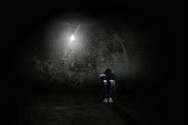

❤️我们必须重新学会爱
❤️我们必须重新学会爱
——一位教育者与母亲在家庭悲剧后的沉思
校长陈丽冰博士撰文
当血色浸染亲情纽带，当教育圣殿坍塌于至亲相残的巨响，社会惊愕的面具下藏着一个冰冷的真相：这不是个案，而是整个文明系统的病理切片。作为一名教育工作者同时人母，我必须以教育的刀锋与母亲的泪光，剖开这场悲剧背后的认知黑洞。这不是"坏孩子"的偶然失控，而是整个生态系统对情感失语的集体惩罚。
近日，一场家庭悲剧震惊了社会：一位敬业的教师在家中不幸遇害，而动手者，竟是她深爱的孩子。这不是一则普通的社会新闻，而是一面刺骨的镜子，映照出我们这个时代在教育、家庭与社会结构中被忽视太久的裂痕。
悲剧不是瞬间的崩塌，而是长期失联的后果。我们总倾向把暴力视为“突发事件”，却往往忽略，它背后往往有漫长的积压与沉默。从家庭内部沟通的断裂、情绪表达空间的匮乏，到教育体系中对心理健康的边缘化，这些看不见的压力，正一点点把一些孩子推向孤绝与愤怒的边缘。
在传统观念中，“成才”是家庭与社会最重要的目标，而“情绪”、“心理状态”、“内在痛苦”常常被认为是“私人的”、“不成熟的”、“不该被放大的”。我们迫不及待地教孩子如何竞争、如何赢，却几乎没有教他们如何承受挫折、如何表达愤怒、如何在失败中看见希望。
孩子不是天生的加害者，恨是被学会的；爱，也必须重新被教育。在这一悲剧中，最令人心碎的，是加害者仍是个孩子。他不是冷血的恶魔，而是一个曾被母亲深深爱着，却最终迷失在情绪风暴中的少年。他所犯下的错误，固然必须承担法律与道德的责任，但我们也应深问：是什么让一个孩子在家庭中失去了最后的信任、连接与希望？爱，从来不是一种本能，而是一种习得。 我们不能理所当然地认为，孩子会懂得如何去爱自己、爱他人；我们更不能以权威和管教取代对话与陪伴。教育的根本，在于“人成其为人”的过程，而非只是知识的灌输、技能的累积。
这起悲剧所暴露的最大盲点，是我们对心理健康教育的长期忽视。无论是在学校还是在家庭，“情绪教育”常被视为“锦上添花”，只有当问题爆发时才被仓促对待。我在此郑重呼吁：心理健康不应再是选修课程，而应是基础课程，是家庭、学校与社会共同承担的责任。我们要从小学开始，就教孩子认识自己的情绪，理解他人的差异，学会倾诉与求助，更重要的是，培养他们在失败和受伤中“自我修复”的能力。同样，教师与家长也必须被赋予相应的支持系统。他们不仅需要专业培训，更需要一个支持性的社区环境，让他们在陪伴孩子成长的过程中，不至于孤军奋战。
这起事件，是一个家庭的毁灭，也是一种社会症状的显现。它促使我们重新思考“教育”的意义：让教育，回归生命的本质。我们要培养的孩子，是不是仅仅是“有用的人”？还是，我们也希望他成为一个“完整的人”？
我们是否有足够的耐心与勇气，去倾听那个被忽视的、沉默的、愤怒的孩子？我们是否有能力让爱重新回到教育的核心——在教会孩子知识的同时，也教会他们成为一个心中有光、有情感、有温度的人？
愿逝者在彼岸世界得以相守，无惧风暴；愿留下的生命，于人世余温中缓慢愈合，重拾信任；更愿我们所有人，从这刺骨的镜鉴中觉醒——在家庭里，在课堂中，在社会的肌理深处，重新练习倾听、理解与温柔。唯有如此，爱才不会迟到，悲剧才不至重演。
最后的祈血色的晨光中，我听见布伯《我与你》的回响：“所有真实的人生都是相遇”。让我们撕碎“成才”的迷障，在每间教室放置倾听的圣坛，在每个家庭点燃理解的烛火。因教育的终极使命，是让每个灵魂在破碎的世界里，依然保有爱人且被爱的能力。
